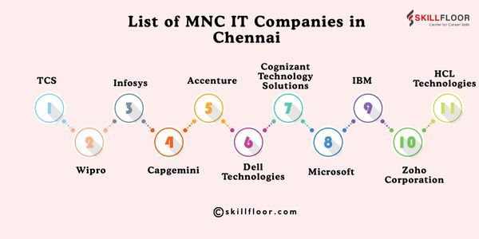

1. Accenture
Website: www.accenture.com
Location: Taramani, Chennai
Services: Consulting, IT services, digital transformation
Career Information: Freshers and experienced roles via careers.accenture.com
Chennai is a major IT and software services hub in South India.

IT multinational companies in Chennai with location, services, and career details.
Chennai stands as one of India's most powerful technology hubs, widely recognized as the "SaaS Capital of India" and a core engine for global digital transformation.
Website: www.accenture.com
Location: Taramani, Chennai
Services: Consulting, IT services, digital transformation
Career Information: Freshers and experienced roles via careers.accenture.com
Website: www.capgemini.com
Location: Sholinganallur, Chennai
Services: Application development, cloud, consulting
Career Information: Campus and lateral hiring through Capgemini careers portal
Website: www.cognizant.com
Location: OMR, Chennai
Services: Software development, BPO, digital engineering
Career Information: Regular openings for developers, testers, and analysts
Website: www.infosys.com
Location: Sholinganallur, Chennai
Services: IT consulting, maintenance, enterprise solutions
Career Information: Infosys careers — campus and experienced hire programs
Website: www.tcs.com
Location: Thoraipakkam, Chennai
Services: Software services, business solutions, IT support
Career Information: TCS NextStep and careers portal for all experience levels
Website: www.wipro.com
Location: Sholinganallur, Chennai
Services: IT services, cloud computing, cybersecurity
Career Information: Wipro careers — engineering and non-engineering roles
Website: www.hcltech.com
Location: Ambattur, Chennai
Services: Software products, infrastructure management
Career Information: HCLTech careers for fresh graduates and professionals
Website: www.ibm.com
Location: OMR, Chennai
Services: Cloud, AI, enterprise software, research
Career Information: IBM careers — technical and consulting positions
Website: www.techmahindra.com
Location: Guindy, Chennai
Services: Telecom IT, digital transformation, BPO
Career Information: TechM careers portal with frequent job postings
Website: www.zoho.com
Location: Estancia, Chennai
Services: SaaS products, business software, cloud apps
Career Information: Zoho careers — product development and support roles